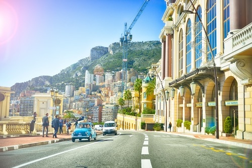

Monaco
The Principality of Monaco, a small city-state overlooking the pristine blue waters of the Mediterranean, is a place famed for its glamour and wealth. The Palais Princier, former home of Princess Grace and current home of her son, Prince Albert II, is at the top of the cliff-bound medieval Monaco-Ville. More well known is Monte Carlo, a neighborhood soaked in sun, money, and expensive champagne, and home to the Formula One Monaco Grand Prix, the European Poker Tour, and the Monte Carlo Rally.
